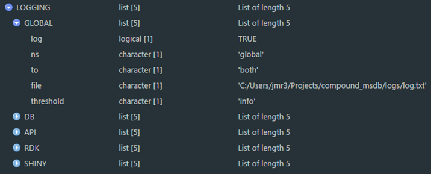

Technical Details
This section contains additional technical details that may be of interest to advanced users, and for future reference as DIMSpec schema and tools mature.
Database Schema
The schema for the underlying database is defined by a series of SQL scripts in the config directory. Data are structured in a series of “nodes” and are detailed in this section. If the sqlite3 CLI is available, these are created by a script using a series of .read commands, one for each node defined. See the file at /config/build.sql for the standard implementation.
Schema files are used from within R as part of the database build routine (see build_db) using the shell (on Windows) or system (on Unix-likes) functions. If the sqlite3 CLI is not available, a fully qualified native SQL script (such as the one provided at /config/build_full.sql) can be generated by create_fallback_build to build and populate in one step by parsing CLI commands in the SQL scripts to build underlying statements directly; this is less customizable and will take considerably longer but serves as a bridge for when CLI tools are not installed.
SQL Nodes
Each node file defines the tables and views necessary to store and serve data for a set of conceptually related entities in the database. Code decorations are used to facilitate translatability to R. Entity definitions (e.g. CREATE TABLE commands) are separated by the defined text string /*magicsplit*/, which is used as string split points by database communication functions to return information about the database. Headers are defined as a long /*=== ... ===*/ SQL comment with equal signs delineating beginning and ending. Table and column comments are defined as /* ... */ SQL comments; one must be present for each entity (i.e. one for the table or view, and one for each column in that table or view). Comments are ignored by SQL and can be used to parse table definitions and return information to an R session. This is what allows R to parse the SQL files for Inspecting Database Properties by reading a table definition:
/*magicsplit*/
CREATE TABLE IF NOT EXISTS annotated_fragments
/* Potential annotated fragment ions that are attributed to one or more mass spectra. */
(
id INTEGER NOT NULL PRIMARY KEY AUTOINCREMENT,
/* primary key */
mz REAL NOT NULL,
/* m/z value for specific fragment, derived */
fragment_id INTEGER NOT NULL,
/* foreign key to fragments table */
/* Check constraints */
/* Foreign key relationships */
FOREIGN KEY (fragment_id) REFERENCES
norm_fragments(id) ON UPDATE CASCADE ON DELETE CASCADE
);to obtain entity properties (Figure 7a), pull column comments directly from the definition (Figure 7b), inspect mapping between entities (Figure 7c; here db_map is an object created by er_map), or pull information together into a formalized data dictionary (Figure 7d; here db_dict is read from a JSON object created by save_data_dictionary) and available for all database tables and views.
This allows for programmatic accessibility, as R sessions can now understand the linkages between tables easily. One implementation example is checking for, resolving, and automatically adding new normalization values with resolve_normalization_value for import resolutions, but could be as simple as understanding that fragment_id here references the norm_fragments table (Figure 7e). In addition, once relationships are in a structured format, applications like the Table Explorer can be built to display to users in a more natural manner the structure of the underlying data tables (Figure 8).

Figure 7a. An example of using [pragma_table_info](#fn_def_pragma_table_info){target="_blank"} to explore table definitions.

Figure 7b. Comments can be easily added to the definition.

Figure 7c. Entity mapping can also be parsed directly from the SQL decoration convention.

Figure 7d. Entity mapping can be saved to disk and recalled conveniently using the SQL decoration convention.

Figure 7e. Entity relationships can also be parsed to programmatically return foreign key relationships.
.")
Figure 8. Decorated SQL definitions provide R with metadata regarding the database. The “Table Explorer” shiny application allows visual exploration of both data and context for any given database entity. With the project active and the compliance file sourced, launch this application in your browser from the console with start_app('table_explorer')).
The following subsections contain summary information about each of the database nodes, its purpose, and the tables and views held within. Some of this information is subject to change as the database schema is refined and maintained. See the full database schema definition as a JSON object in the project directory as a file ending in "_data_dictionary.json”. Entities found in each node and snapshots of their structure from the complete entity relationship diagram (ERD) are provided (right click and open a diagram in a new tab to see it larger); generally, node tables are in a color, automatic views are in grey, and functional views are in white.
Some views are automatically generated (see the flag “[autogenerated by sqlite_auto_view()]” in the description) to display human-meaningful values instead of the index linkages for normalized columns, e.g. the ms_methods table can then be viewed in a “denormalized” way using the view_ms_methods view to get display values for normalized fields (Figure 9).

Figure 9a. Screenshot of the first four rows of the normalized database table ‘ms_methods’.
Figure 9b. Screenshot of the first four rows of the denormalized database table ‘ms_methods’ available as view ‘view_ms_methods’.
The Analyte Node
This node contains information relevant to analytical targets. This node does not contain analytical data, but rather identifying information and views to compare that identifying information with measurements held in the “data” node and is also linked to the “contributors” node. It contains two sub-nodes. One describes compounds and one describes fragments. These are linked through the “compound_fragments” table (which includes a link outside this node to the “peaks” table of the data node to allow for existence in either and flexible bidirectional linkages to be established for known links, without assuming presence in both. Both *_alias tables are normalized by norm_analyte_alias_references, and fragment_sources is normalized by norm_generation_type (described in the data node but also generated here for modularity and not shown below).
| Entity Name | Description |
|---|---|
| Tables | |
| annotated_fragments | Potential annotated fragment ions that are attributed to one or more mass spectra. |
| compound_aliases | List of alternate names or identifiers for compounds |
| compound_categories | Normalization table for self-hierarchical chemical classes of compounds. |
| compound_fragments | Bidirectional linkage table to tie peaks and compounds to their confirmed and annotated fragments. |
| compounds | Controlled list of chemical compounds with attributable analytical data. |
| fragment_aliases | List of alternate names or identifiers for compounds |
| fragment_inspections | Fragment inspections by users for ions that are attributed to one or more mass spectra. |
| fragment_sources | Citation information about a given fragment to hold multiple identifications (e.g. one in silico and two empirical). |
| norm_analyte_alias_references | Normalization table for compound alias sources (e.g. CAS, DTXSID, INCHI, etc.) |
| norm_fragments | Normalization list of annotated fragments |
| norm_source_types | Validation list of source types to be used in the compounds TABLE. |
| Views | |
| compound_data | View raw data from all peaks associated with compounds. |
| compound_url | Combine information from the compounds table to form a URL link to the resource. |
| view_annotated_fragments | Measured fragments as compared with fixed masses |
| view_compound_aliases | [autogenerated by sqlite_auto_view()] View of “compound_aliases” normalized by “norm_analyte_alias_references”. |
| view_compound_fragments | Fragments associated with compounds. |
| view_compound_fragments_stats | [DRAFT] Summarization view of statistics associated with compound fragments, including the number of times they have recorded, their measured masses, and ppm error as compared with nominal exact masses. |
| view_compounds | [autogenerated by sqlite_auto_view()] View of “compounds” normalized by “norm_source_types”. |
| view_fragment_aliases | [autogenerated by sqlite_auto_view()] View of “fragment_aliases” normalized by “norm_analyte_alias_references”. |
| view_fragment_count | Number of fragments associated with compounds. |
| view_fragment_mz_stats | [DRAFT] Mean measures of measured_mz values - a supplementary calculation table. |
| view_fragment_sources | [autogenerated by sqlite_auto_view()] View of “fragment_sources” normalized by “norm_generation_type”. |
Figure 10. Analyte node of the entity relationship diagram (modified).
The Contributors Node
This node contains information relevant to identifying data contributors, similar to a “users” table. It is used primarily to provide contribution statistics and tie data to data producers in the samples and analytes node, both of which are connected to the peaks node. When the database is built, a “sys” username with the affiliation “system” is automatically added as a default user.
| Entity Name | Description |
|---|---|
| Tables | |
| contributors | Contact information for individuals contributing data to this database |
| affiliations | Normalization table for contributor.affiliation |
| Views | |
| view_contributors | Readable version of the contributors table that can be expanded with counts of contributions from various places. |
")
Figure 11. Contributors node of the entity relationship diagram (modified).
The Data Node
This node contains mass spectral data, metadata about samples and the software used to generate it, identification confidence, and quality control measures, as well as views to consume it directly. It is linked to the analyte node through the compound_fragments table and to the contributors and methods nodes through the samples table. This node contains two sub-nodes and is the main location of analytical data. One describes samples and one describes peaks generated from those samples (Figure 12).
| Entity Name | Description |
|---|---|
| Tables | |
| conversion_software_peaks_linkage | Linkage reference tying peaks with the conversion software settings used to generate them. |
| conversion_software_settings | Settings specific to the software package used to preprocess raw data. |
| ms_data | Mass spectral data derived from experiments on a compound-by-compound basis. Empirical isotopic pattern. |
| ms_spectra | Retained mass spectra associated with ms_data, unencoded from ms_data.measured_mz and .measured_intensity respectively. |
| norm_generation_type | Normalization table for fragment generation source type |
| norm_ion_states | Normalization table for the measured ion state as compared with the molecular ion. |
| norm_peak_confidence | Normalization levels for peak identification confidence |
| norm_sample_classes | Normalization table linking to samples to hold controlled vocabulary. |
| norm_qc_methods_name | Normalization table for quality control types: controlled vocabulary. |
| norm_qc_methods_reference | Normalization table for quality control reference types: controlled vocabulary. |
| opt_ums_params | Table of optimal parameters for uncertainty mass spectra |
| instrument_properties | Expandable properties describing performance properties of the mass spectrometer at the time a peak was measured, generally the same across a given sample and ms_method, but not always. |
| peaks | Peaks (or features) identified within the results from a sample. |
| qc_data | Detailed quality control data as assessed by expert review (long format). |
| qc_methods | References to quality control (QC) methods used to vet experimental results |
| sample_aliases | Alternative names by which this sample may be identified e.g. laboratory or repository names, external reference IDs, URIs, etc. |
| samples | Samples from which analytical data are derived; physical artifacts that go into an analytical instrument. Deleting a contributor from the contributors table will also remove their data from the system. |
| Views | |
| peak_data | View raw peak data for a specific peak |
| peak_spectra | View archived and verified peak spectra for a specific peak |
| view_masserror | Get the mass error information for all peaks |
| view_peaks | View of “peaks” with text values displayed from normalization tables. |
| view_qc_methods | [autogenerated by sqlite_auto_view()] View of “qc_methods” normalized by “norm_qc_methods_name” and “norm_qc_methods_reference”. |
| view_sample_narrative | Collapses the contents of view_samples and view_contributors into a single narrative string by ID |
| view_samples | [autogenerated by sqlite_auto_view()] View of “samples” normalized by “norm_sample_classes”, “norm_generation_type”, and “norm_carriers”. |
 showing the samples (top) and peaks (bottom) subnodes with node connections to the contributors node, the analyte node, and subnodes in the methods node (modified).")
Figure 12. Data node of the entity relationship diagram (modified) showing the samples (top) and peaks (bottom) subnodes with node connections to the contributors node, the analyte node, and subnodes in the methods node (modified).
The Methods Node
This node contains data describing experimental settings, both for the chromatographic separation and the mass spectrometer. It is the largest node, composed of four subnodes. The mass spectrometer (“mass spec”) subnode contains information about the mass spectrometer settings used to collect data for an experiment and is closely related to the “descriptions” node which contains vendor descriptions for all instrumentation used in the experiment, allowing a single mass spectrometric method to describe multiple detectors and chromatographic separators. The quality control subnode describes the quality control procedures that were applied. Finally, the “mobile phase” subnode describe chromatographic conditions, allowing for multiple chromatographic components to be described, and multiple stages of mobile phase conditions.
| Entity Name | Description |
|---|---|
| Tables | |
| additive_aliases | List of common aliases for each entry in norm_additives |
| carrier_additives | Mobile phase additives mixture for a given carrier mix collection |
| carrier_aliases | List of common aliases for each entry in TABLE norm_carriers |
| carrier_mix_collections | An intermediary identification table linking mobile_phases and carrier_mixes |
| carrier_mixes | Mobile phase carrier mixture for a given elution method |
| chromatography_descriptions | Full description of all chromatography types used for a given entry in ms_methods. |
| mobile_phases | Description of mobile phases used during a chromatographic separation. |
| ms_descriptions | Full description of all mass spectrometer types used for a given entry in ms_methods. |
| ms_methods | Mass spectrometer method settings. |
| norm_additive_units | Normalization table for mobile phase additive units: controlled vocabulary |
| norm_additives | Normalization table for the carrier additives list: controlled vocabulary. |
| norm_carriers | Mobile phase carrier list: controlled vocabulary. |
| norm_ce_desc | Normalization table for collision energy description: controlled vocabulary. |
| norm_ce_units | Normalization table for collision energy units: controlled vocabulary. |
| norm_chromatography_types | Normalization table for chromatography types: controlled vocabulary. |
| norm_column_chemistries | Normalization table for chromatographic column type: controlled vocabulary. |
| norm_column_positions | Normalization table for chromatographic column position: controlled vocabulary |
| norm_duration_units | Normalization table for mobile phase duration units: controlled vocabulary |
| norm_flow_units | Normalization table for mobile phase flow rate units: controlled vocabulary |
| norm_fragmentation_types | Normalization table for fragmentation type: controlled vocabulary. |
| norm_ionization | Normalization table for mass spectrometer ionization source types: controlled vocabulary |
| norm_ms_types | Normalization table for types of ms_n experiments. |
| norm_ms_n_types | Normalization table for ionization polarity: controlled vocabulary. |
| norm_polarity_types | Normalization table for ionization polarity: controlled vocabulary. |
| norm_vendors | Normalization table holding commercial instrument vendor information: controlled vocabulary. |
| norm_voltage_units | Normalization table for ionization energy units: controlled vocabulary. |
| Views | |
| view_additive_aliases | [autogenerated by sqlite_auto_view()] View of “additive_aliases” normalized by “norm_additives”. |
| view_carrier_additives | View complete mobile phase used in a mixture |
| view_carrier_aliases | [autogenerated by sqlite_auto_view()] View of “carrier_aliases” normalized by “norm_carriers”. |
| view_carrier_mix | View complete mobile phase used in a mixture |
| view_carrier_mix_collection | Tabular view of carrier mix components by mixture ID |
| view_carrier_mixes | [autogenerated by sqlite_auto_view()] View of “carrier_mixes” normalized by “norm_carriers”. |
| view_chromatography_types | View all chromatography types in methods |
| view_column_chemistries | Convenience view to build view_method_as by providing a single character string for column chemistries used in this method |
| view_detectors | Convenience view to build view_method_as by providing a single character string for detectors used in this method |
| view_mass_analyzers | View all mass analyzers used in methods |
| view_method | View mass spectrometer information and method settings |
| view_method_narrative | Collapses the contents of view_method into a single narrative string by ID |
| view_mobile_phase_narrative | A print convenience view creating a narrative from the elution profile of each ms_methods_id, with one row for each profile stage. |
| view_mobile_phases | [autogenerated by sqlite_auto_view()] View of “mobile_phases” normalized by “norm_flow_units” and “norm_duration_units”. |
| view_ms_descriptions | [autogenerated by sqlite_auto_view()] View of “ms_descriptions” normalized by “norm_ms_types” and “norm_vendors”. |
| view_ms_methods | [autogenerated by sqlite_auto_view()] View of “ms_methods” normalized by “norm_ionization”, “norm_voltage_units”, “norm_polarity_types”, “norm_ce_units”, “norm_ce_desc”, “norm_fragmentation_types”, and “norm_ms_n_types”. |
| view_separation_types | Convenience view to build view_method_as by providing a single character string for chromatography type |
Figure 13. Methods node of the entity relationship diagram (modified) containing the mass spectrometer (“mass spec”, 13a), descriptions (13b), and mobile phase (13d) subnodes. Together these describe the chromatographic separation and mass spectrometric system used for a single entry in the “ms_methods” table.
.")
Figure 13a. Mass spectrometer subnode of the methods node (modified).
.")
Figure 13b. Chromatographic and instrumental descriptions subnode of the methods node (modified).
.")
Figure 13c. Chromatographic mobile phase information subnode of the methods node (modified).
The Reference Node
This node contains universally applicable reference information for chemical metrology. Data for elements, their exact masses, and their natural isotopic abundances are automatically added as part of the database build process. It also includes a configuration table that, when built, will contain the current datetime stamp and an 8-character HEX installation code that should assist with any later combinations or referencing across database installations. This node does not directly connect to any others but serves only for computational convenience.
| Entity Name | Description |
|---|---|
| Tables | |
| config | Installation code to facilitate widespread usage. |
| elements | Normalization list of periodic table elements 1-118. |
| isotopes | Elemental isotope abundance ratios for comparison and deconvolution. |
| Views | |
| view_exact_masses | Exact monoisotopic masses for elements at their highest abundance. |
| view_element_isotopes | A view of all elemental isotopes and their relative abundances joining reference tables “elements” and “isotopes”. |
")
Figure 14. Reference node of the entity relationship diagram (modified)
The Logging Node
This node is included for automatic logging within the database itself (a future development opportunity), with tables to store and normalize logs and store a database version history. It is not used by default, but rather serves as a placeholder in case logging should be enabled via triggers if required by the data management and quality control systems for a given project. As it is not in use and has not been tested, details are not included but can be queried like any other tables. For visualization purposes, it is included with the reference node.
Script Generated Views and Triggers
Creation of “denormalization views” (Figure 9) and certain triggers can be accomplished in R with the sqlite_auto_view and sqlite_auto_trigger functions. These parse SQL definitions as demonstrated in Figure 4. For views, this results in a view of the table where foreign key indices are replaced by their human readable values where the linked normalization table is the simplest case of id and value columns.
Foreign key enforcement is provided for table columns linked to two-column normalization tables by automatically generated triggers. These triggers will examine the value of any supplied value to the column and replace it with the linked index. If a value does not exist, it will be added to the normalization table and the resulting index used. This is a crude data integrity measure for when the database is accessed without explicitly turning on foreign keys. Under normal circumstances the foreign key enforcement will take care of this issue but these are provided here as a backup.
To exclude automatic views and triggers, simply remove calls to those files in the build.sql file.
Populating Data at Build
Populating data can be accomplished automatically at build time from CSV or SQL files, allowing for rapid iteration and rebuild. Data population is defined by SQL scripts in the config directory. If the sqlite3 CLI is available (recommended) data are imported from CSV files using a series of .import commands, one for each table being populated. If the sqlite3 CLI is not available, instead use a fully qualified native SQL script such as the one provided at “config/build_full.sql” to build the schema and populate data in one step; this is less customizable but serves as a bridge for when CLI tools are not installed.
Compute Environments
Several environment resolution options are available in this project depending on which aspects are requested by the user. The default setting in the R/compliance.R file creates an R session that (1) connects to a database, (2) turns on the logging functionality, (3) turns on argument validation for certain R functions, (4) makes rdkit available to that session, and (5) spins up an API server in a background process; this can take a considerable amount of time (e.g. up to 3 minutes on slower systems; more typically this is around 90 seconds) and may be slower than users are accustomed to when loading packages. Environment values are set by configuration files, most of which are described in the Project Set Up section. To increase system compatibility, these are not set at the system level, but rather kept at the session level.
Users likely will not need every aspect each time. Starting an R session that can (re)build or connect directly to a database, or simply launching the API server, does not require every aspect. Editing the environment files, primarily in “config/env_glob.txt” and “config/env_R.R” (Table 1; Table 2) will determine which aspects are made available in the session.
Users may choose whether to connect to the database (and load all the database communication support) at load time; this generally is not a time intensive operation, but connection validation and loading of additional packages does increase load time somewhat. If the connect option is selected and a database file with the defined name does not exist, it will be built according to the build settings in Project Set Up.
Users similarly may choose whether to launch the API server which adds additional dependencies. This can be done in an active session at any time after loading using api_reload with the background parameter determining if it should be launched in the current session or in a background process; the default is to launch it in a background process and return control to the session. The same function will allow the service to reload if any changes are made to API functionality in the "inst/plumber/plumber.R" file.
Using rdkit slows down the load time considerably as the R session must resolve, activate, and bind to a python environment. While it is recommended it is not required; set INFORMATICS to FALSE to turn this feature off.
For developers, two convenience functions are available to jump to specific files within the project. These require RStudio to use but will open identified files for viewing and editing.
open_envwill open an environment file. The name parameter must be one of the six defined environments (i.e. “R”, “global”, “logging”, “rdkit”, “shiny”, or “plumber”); the default is “R” (e.g.open_env(“logging”)to edit the logger environment settings). Name options are hard coded to specific paths for this version;open_proj_filewill open any file in the project, though its main use is for R script files. File identification is accomplished by regular expression matching on files in the project directory, and in the case of multiple matches it will instead return a list of those files. As always, functions can be viewed in the RStudio viewer withView(fn).
To determine whether an environment has been established, boolean session variables are set when each file is sourced with the prefix RENV_ESTABLISHED, one for each aspect. Adding functionality during an active session will check for these and if they are required and do not exist, will automatically add necessary components to the current environment.
Shiny Applications
This user guide does not provide details on developing shiny applications. Shiny apps are enabled through the environment file at inst/apps/env_shiny.R and will load necessary packages (see References). These are automatically installed if not present the first time the application is launched on any given system.
Applications are located in the inst/apps directory and are self-contained in subdirectories by app name. The three that ship with the project are in the “three file” format of global.R, ui.R, and server.R and make use of the API for database communication; they will launch the API server in a background process if it is not already running. To add a live database connection to a new app, simply add the connection object to global.R for that app and develop as normal.
A skeleton application making use of project tooling is also provided. Simply copy the inst/apps/app_template directory under a new name and begin developing any needed shiny app as normal. Additional helper functions are defined in the inst/apps/shiny_helpers.R file such as the ability to easily append tooltips to any given shiny widget.
This section lists out the three applications that ship with the project and gives a brief description of them. Each are detailed in their own chapters.
Table Explorer
This Shiny application is simple example included with the project. It provides information about tables and views in an intuitive interface and details not only their contents but the entity definition and links to other entities in a human-readable format. Launch it after the compliance script has been run with run_app(“table_explorer”) or from the console or command line with shiny::runApp(“inst/apps/table_explorer”) which will solve the environment and launch the application. A developer mode is also available, allowing users to click the “Inspect” button to drop into an interactive R session to view (set dev = TRUE in global.R inside the app directory). The application includes only two screens, one (“Table Viewer”) to preview data available there and to view structural information for an entity selected, and another to view a high-resolution picture of the entity relationship diagram that can be downloaded or examined in a separate browser tab with the right-click context menu option to open an image in a new tab.
This application served as proof-of-concept for environment resolution and API communication, and to provide DIMSpec users and developers a way to visualize connections between database entities.
The Table Explorer application is detailed in its own section.

Figure 15. Screenshot of the “Table Explorer” shiny application showing database structural information available at a glance for the view_exact_masses database table.
Mass Spectral Match (MSMatch)
This Shiny application could easily be considered the entire reason behind the genesis of the DIMSpec project. It was built specifically to accelerate non-targeted analysis projects by searching experiment result data in mzML format for matches against a curated mass spectral library of compounds and annotated fragments. MSMatch is a web application built using the Shiny package in R and installs alongside DIMSpec. It is one example of a tool that can built on top of the DIMSpec toolkit. Launch it after the compliance script has been run with run_app(“msmatch”) or from the console or command line with shiny::runApp(“inst/apps/msmatch”) which will solve the environment and launch the application. Databases built and managed with DIMSpec are SQLite files used within a distributed R Project. Scripts for automated setup are included. For this initial release, DIMSpec is distributed with data populated for per- and polyfluorinated alkyl substances (PFAS); that effort has been primarily supported by the Department of Defense Strategic Environmental Research and Development Program (DOD-SERDP), project number ER20-1056.
The MSMatch application is detailed in its own section.

Figure 16. Screenshot of the “Mass Spectral Match” application with user data showing matches to known mass spectral signatures.
DIMSpec Quality Control (DIMSpec-QC)
This Shiny application serves as an automated application of quality control and assurance functions built to assess data contributions to DIMSpec. There is no “hard stop” based on these quality checks, but the results of the quality checks are included alongside data contributions when they are selected for addition to a DIMSpec database. Data in the mzML format and an associated JSON file produced by the NIST NTA-MRT tool are loaded into the application and then each may be selected to evaluate data quality. Specific conversion parameters must be used during conversion from the raw instrument output. For each peak within each raw file the following checks will be performed.
- Is the reported precursor ion m/z value within the reported instrumental error of the calculated precursor ion m/z of the designated compound?
- Does the MS1 isotopic pattern of the submitted data match the calculated isotopic pattern with a match score above an expected value?
- Is the reported precursor ion m/z value present in the MS1 mass spectrum of the submitted data?
- Are the reported annotated fragment ion m/z values present in the MS1 mass spectrum of the submitted data?
- Are the reported annotated fragment ion m/z values value within the reported instrumental error of the fragment ion m/z of the designated fragment, calculated from the elemental formula?
- If there is a SMILES structure provided for an annotated fragment, does the elemental formula of the SMILES structure match the elemental formula provided for the same annotated fragment?
Finally, optimized settings for the uncertainty mass spectrum of the MS1 and MS2 data are calculated to facilitate searches for submitted compounds.
The DIMSpec-QC application is detailed in its own section. Launch it after the compliance script has been run with run_app(“dimspec-qc”) or from the console or command line with shiny::runApp(“inst/apps/dimspec-qc”) which will solve the environment and launch the application.
Logger
Logging status and meaningful messages to both the console for interactive sessions and to disk allows for more efficient troubleshooting and debugging, as well as status reports on performance. Logging is enabled by default in the project and implemented by custom functions on top of the logger package. That package supports namespaced logging at various levels and prints nicely to the console if provided with a formatter function. This user guide does not go into detail about the logger package, but documentation is readily available online.
Logging parameters are set when the compliance script is sourced (see Project Set Up). Settings are stored in a session list LOGGING with each element named for a namespace. Turn off logging by setting LOGGING_ON = FALSE in the set up process. At any time during a session, you may change the logging settings and run the update_logger_settings function to change the way to logging functions are working. Setting the $log property to FALSE will cease printing and recording of log messages for that namespace. Options for the $to property include “file”, “console”, and “both” and, if this is either “file” or “both”, logs will be written to the path in the $file property. The threshold must be one of the valid options in logger, which is a ranked vector (i.e. one of “trace” < “debug” < “info” < “success” < “warn” < “error” < “fatal”); the $threshold property represents the minimum level at which to record logs. If, for example, the threshold is set to “info” then “trace” and “debug” messages will be ignored.

Users may then issue logging statements directly through logger using the $ns property namespace. The primary manner of issuing logging messages in the project however is the log_it function which works without logger to display messages in the console and includes an abstraction and validation layer that provides the benefits of argument validation, ignoring certain function calls, inclusion of the function from which log_it was called, and setting up new namespaces by cloning the settings from an existing one. If logger is available, logs will print nicely to the console and be saved to disk if set to do so. Logs written to disk can at any time be read back into the session either printed to the console (read_log) or to a data frame (log_as_dataframe) for examination.
Logs are not tracked in the git repository for the project as each installation should have isolated logs. The logger package supports rollover past a certain size. The log directory (or any directory, though that is not recommended except in the case of a directory of temporary files) can be flushed at any time with the included function flush_dir(directory = “logs”, pattern = “.txt”) where directory is the name of an available directory and pattern is a regular expression used to match files to remove. Matching files will be removed by default but can be archived with the current date suffixed to the file name by setting archive = TRUE.
Plumber
Communication with the underlying database is performed by default using a background process through the plumber package, which produces a RESTful API and offloads processing to a separate R process. It is recommended to communicate with the API using the api_endpoint function which takes as arguments mainly the endpoint path and any named criteria necessary to execute the endpoint, however, the plumber service can be used with any API query method (e.g. httpuv, httr, curl, etc.). The api_endpoint function accepts any server address and path (if the path includes the address it will ignore the server_addr argument), accepts any additional arguments needed to use the endpoint with the ellipsis (including advanced parameters for other APIs), will return the constructed call rather than executing it with execute = FALSE, will return values to the session (the default) or in a browser window with open_in_browser = TRUE, and can return results in a variety of formats. Plumber APIs communicate in JSON strings. Set the return_type and return_format appropriately for what you expect back from the server; the default is a vector.
The environment for the API is defined at inst/plumber/env_plumb.R; package requirements are resolved as part of the environment. When launched as a background process the name of the resulting object is drawn from the env_plumb.R file, by default plumber_service. During launch the server will add several R scripts from defined files in the project directory; more can be added by modifying the r_scripts variable. Logging is turned on by default for the API as no interactive session is available. Finally, rdkit integration is enabled and a connection is established with the project database as defined elsewhere. Any of these settings can be customized for use.
Certain options which may also be changed are set at the project level in "config/env_R.R", which is necessary to share values and keep sessions connected appropriately. Those options include the PLUMBER_VERSION (if you are iterating for development, testing, or deployment), PLUMBER_HOST, PLUMBER_PORT, and PLUMBER_FILE. These should generally not be changed, but certain network configurations may require alterations to the host and port. It is recommended in that case to set options (e.g. getOption("plumber.host") and getOption("plumber.port")) in the project or user .Renviron file or in the session prior to running the compliance script to set other values; the compliance script will honor those settings. The default listening port is http://127.0.0.1:8080; Swagger documentation will be available at http://127.0.0.1:8080/__docs__ until the server stops.
To restart the API server from an R session, use the api_reload function. This will close and relaunch the service in a background process and return control to your session. Call it with background = FALSE to launch it directly within the current session, which will automatically launch a browser pointing to the Swagger documentation. By default api_reload pulls its parameters from the current compute environment. To launch a second API server with different endpoints under a different name, use api_reload with different parameters, e.g.:
api_reload(
pr = "api_service2",
plumber_file = "new_plumber.R",
on_host = "127.0.0.1",
on_port = 8085
)The background process is launched using callr::r_bg and the health of resulting object can be checked with the api_service2$is_alive() property for the example above. With the server running, call api_open_doc with the API URL (e.g. http://127.0.0.1:8085 for the example above) to launch a browser with the documentation.
Plumber endpoints are decorated R functions available to a routing server managing transactions for request and response. Endpoint specifications that ship with the project are defined in the inst/plumber/plumber.R file. Plumber uses the OpenAPI specification and provides interactive Swagger documentation once the server is active. Any R function can be turned into a plumber endpoint, or an endpoint can be defined that uses an existing R function if that function is available in the environment. The latter case is the one used most often in this project; a modified version of the function is created and then redirected as needed. This allows flexibility to be able to handle any preprocessing necessary (e.g. unpacking JSON or argument verification) before calling the underlying function while keeping that function available for interactive use. Several endpoints are provided in the project and are described in the following paragraphs.
Two filters are defined that will ensure a database connection is alive and log incoming requests prior to forwarding to their destination path.
Three health endpoints are defined:
“_ping” checks to make sure the server is ready to respond to requests and returns “Ok” if so; if the server is not yet ready (e.g. it is still resolving its environment) calling with api_endpoint(“_ping”) will try a number of times (20 is the default) before it times out;
“db_active” and “rdkit_active” return Boolean values for whether the API can communicate with the database and rdkit, respectively.
Four inspection endpoints are defined to assist with debugging:
“version” returns the value defined by
PLUMER_VERSIONto ensure the running version meets expectations;“support_info” endpoint returns a nested list of system and project properties drawn from the environment files and server information; it is roughly equivalent to the
support_infoproject function intended to facilitate support tasks during deployment;“exists” returns a Boolean value for whether a function exists in the server environment;
“formals” returns the names of formal arguments for a function by name as defined in the server environment and is roughly equivalent to the base R function “formals” when called as a list.
The remaining twelve endpoints perform database queries or actions:
“compound_data” returns mass spectral data for a compound by its internal ID number;
“list_tables” and “list_views” lists tables and views, respectively, in the database;
“method_narrative” returns the mass spectroscopic method narrative for a peak, sample, or method by its database primary key id;
“molecular_model/file” and “molecular_model/png” use
rdkitto generate and return either (“/file”) a file path to a molecular ball-and-stick plot of a compound or fragment in portable-network-graphics (png) format or (“/png”) the graphic itself. If notation is provided, it must match thenotation_typeprovided;“peak_data” returns mass spectral data for a peak by its internal ID number;
“sample_narrative” returns the plain text narrative for a sample by its database primary key id;
“search_compound” uses
search_precursororsearch_allto find matching compounds for a processed mass spectrum object in JSON notation. This does no preprocessing of thesearch_msitem and only executes the defined search on the database. The serialized version of the object created fromcreate_search_msis much smaller than that of serializing the entire mzML object;“search_fragments” uses
get_compound_fragmentsand additional processing to find matching fragments from the database for a list of fragment mass-to-charge ratios;“table_search” is equivalent to
build_db_actionfor SELECT queries and is the most flexible way to query the database.
More information about these endpoints is available using the Swagger documentation, which includes live testing for endpoints. New endpoints can be defined easily, and the server can be quickly relaunched at any time with api_reload.
Python
Python is an open-source general programming language with similar aspects to R. Packages are controlled by environment management programs, the most common of which is the “conda” package manager available through installing either Anaconda or Miniconda. Integrating R and Python requires the reticulate R package which allows for miniconda to be installed independently. If no installation can be identified, the compliance script of this project will install miniconda through R. Python environments are sets of packages tied to a python distribution and must be established prior to use; when using reticulate to integrate R and Python that environment must include the r-reticulate python library. Environment resolution should in most cases be left to the compliance script but is described below for both completeness and to support and inform non-standard installations of python and package management solutions. There are several settings in the “inst/rdkit/env_py.R” environment script that may be changed to comply with systems using advanced or non-standard python package management approaches.
| Setting | Type | Description |
|---|---|---|
| PYENV_NAME | String | The name of the python environment (conda preferred) to use. It must contain rdkit and r-reticulate and can be solved using the provided .yml file; defaults to "nist_hrms_db" but can be easily customized for any installation. This is only a name reference to activate and, if necessary, build a python environment (be default a conda environment). |
| PYENV_REF | String | The name of the R session object which will be tied with rdkit functions; defaults to "rdk". |
| USE_PY_VER | Numeric | The version of Python to install into the PYENV_NAME environment; defaults to 3.9. |
| INSTALL_FROM | String | For stability, this should be "local" in most cases which will build from the file located at INSTALL_FROM_FILE. |
| INSTALL_FROM_FILE | String Path | The file path to a local environment.yml file to be used to build the python environment using functions provided in this project. |
| PYENV_LIBRARIES | String Vector | A fall-back list of python packages required if INSTALL_FROM_FILE fails on your system, assists with manual creation using reticulate. |
| PYENV_MODULES | String Vector | Module names that must be present and available in the environment; defaults to "rdkit" which is the only required library for this project. |
| PYENV_CHANNELS | String Vector | Channels from which to install python libraries; defaults to "conda-forge" for consistency. Other channels can be added for customization and non-conda package distributions. |
| CONDA_PATH | String Path | Under most circumstances, this should always be left as the default "auto" though advanced set ups may have other requirements and, in that case, (e.g. multiple installations) this should be a file path to a conda executable that will be used for this project. |
Several project functions exist to create, activate, and manage python environments through reticulate. These are housed in the “inst/rdkit/py_setup.R” file and documentation is available with fn_help(fn) where fn is the name of the function either quoted or unquoted. The most user friendly of these is: rdkit_active which wraps the other function calls in a flexible arrangement pulling from environment settings and has the following arguments inheriting the above settings:
| rdkit_ref | defaults to PYENV_REF (see above) |
| rdkit_name | defaults to PYENV_NAME (see above) |
| log_ns | the logging namespace to use, defaults to “rdk” |
| make_if_not | must be a TRUE/FALSE value indicating whether an rdkit environment as defined in the table above should be installed if it is not already available (defaults to FALSE) |
Chemometric operations are performed by the rdkit package (as built into this python environment) which is a wrapper for the underlying C library and is used here primarily by the plumber server with the reticulate package. This ROA does not include a tutorial for rdkit.
The first time the project is used, sourcing the "R/compliance.R" script should automatically set up the compute environment. The python module is published to the conda registry as "rdkit" in the "conda-forge" channel. To minimize package conflicts, it is recommended that it be installed with packages only from the "conda-forge" channel and forced to python 3.9 for the current version of this project. With conda installed and available in your PATH environment, there are two options to manually create the required environment. (If miniconda is installed through R this will not be available.) In a terminal prompt open at the project directory, this can be created from the provided environment file with:
conda create -n nist_hrms_db -f inst/rdkit/environment.ymlor created directly from any directory with:
conda create -n nist_hrms_db -c conda-forge python=3.8 reticulate=1.24 rdkit=2021.09.4Again, functions in the project should take care of the set up as part of the environment resolution but may fail on certain systems. Note that the environment name "nist_hrms_db" is only a recommended environment name and could be anything, but in either case must match that provided in the configuration file at inst/rdkit/env_py.R as variable PYENV_NAME. There is no need to activate this environment, but testing it is considered good practice. Once the compliance script is run and rdkit is available (typically as the R object rdk), all rdkit functionality can be used (e.g. create a mol file from the SMILES string for hexane using rdkit$Chem$MolFromSMILES("CCCCCC").
Importing Data
For now, importing data is only supported at the command line using JSON mzML files generated by the NTA MRT tool. For other uses, import routines will need to be developed to translate source data into the database schema. Several import file examples are provided in the example directory. Import requirements are defined in the file “config/NIST_import_requirements.json” and each file is screened against this list. During the import process, files are parsed with the import map defined in “config/map_NTA_MRT.csv”
The easiest way to demonstrate the import routines (which are largely described in Importing Data) from within an R session (the following requires that packages magrittr and stringr be loaded) is to create a list of files to import (e.g.)
f_dir <- file.path("example")
# here “example” could also be a network path
f_names <- list.files(f_dir, ".JSON$", full.names = TRUE)
to_import <- lapply(
f_names,
function(x) fromJSON(read_file(x))
) %>%
setNames(
str_remove_all(
f_names,
sprintf("(example%s|.JSON$)", .Platform$file.sep)
)
)verify these files meet import requirements and expectations:
obj_check <- verify_import_requirements(to_import)
cat(
sprintf("Required data are %spresent.\n",
ifelse(all(obj_check$has_all_required), "", "not ")),
sprintf("Full detail data are %spresent.\n",
ifelse(all(obj_check$has_full_detail), "", "not ")),
sprintf("Extra data are %spresent.\n",
ifelse(any(obj_check$has_extra), "", "not "))
)and examine the resulting obj_check session object, a data frame of verification checks which can be filtered and searched as normal Figure 17. The missing_requirements, missing_detail, and extra_cols columns in the resulting data frame are list columns detailing any number of verification failures and which elements were missing or not in the import mapping definition.
Figure 17. Screenshot of the results from importing a directory of data files in JSON format and verifying they meet import expectations.
This verification check is run automatically as part of the full_import pipeline, with the following parameterized options to determine behavior based on verification of individual components of the import object:
- exclude_missing_required
- defaults to
FALSE - Rather than the import pipeline failing, set this to TRUE to ignore and exclude (and get a list of failures) files that do not meet import requirements.
- defaults to
- stop_if_missing_required
- defaults to
TRUE - Stops the import process if files do not include all requirements. This is forced to
TRUEwhenexclude_missing_requiredisFALSEto ensure integrity.
- defaults to
- include_if_missing_recommended
- defaults to
FALSE - By default, files missing recommended information are skipped from the import process, under the assumption that data may be missing. Set to
TRUEto include these.
- defaults to
- stop_if_missing_recommended
- defaults to
TRUE - Stops the import process if files do not include all recommended data.
- defaults to
- ignore_extra
- defaults to
TRUE - Rather than the import pipeline failing, set this to
TRUEto ignore and exclude (and get a list of failures) data in files that are not expected given defined import requirements.
- defaults to
- ignore_insert_conflicts
- defaults to
TRUE - Rather than the import pipeline failing, set this to
TRUEto ignore and exclude (and get a list of failures) insert conflicts during database write operations.
- defaults to
This user guide does not completely detail all of the parameters for the full_import function as most are schema specific and passed to underlying action functions. See the full function documentation if interested. The import pipeline resolves each of the SQL Nodes in order and makes liberal use of console feedback during the process when it cannot automatically resolve:
- Contributors are resolved under the expectation that this may be often repeated for a given set of import files; a temporary data frame is created that maps provided contributor identifiers to known contributors and, where resolution fails, prompts the user to either create a new contributor record or map that value to an existing contributor which is then maintained for the remainder of the import process.
- Methods are resolved by examining the mass spectrometric method properties (i.e. ionization type, voltage, polarity, collision energy, etc.) and matching against known methods, allowing for deep linking of data that were generated using the same mass spectrometry method; additional instrument properties are also recorded in a linked table allowing for an unlimited number of records to be attached.
- Descriptions are resolved for the models and properties for any number of mass spectrometer and chromatographic separation system configurations used to generate data; conceptually, this could result in conflicts if the exact same method settings are used across multiple systems, but collisions are highly unlikely.
- Sample properties and the mzML file used to generate data are resolved and can have attached any number of aliases for a single sample including external identifiers and links to those data sources; similarly to the methods node, sample properties are first matched against known samples to enable deep linking and for data from samples to be reanalyzed while maintaining linkages to previous data.
- Chromatography condition descriptions for sample and method are resolve to an open-ended collection of carrier information including flow rates and carrier mixes with individual components and additives.
- Quality control descriptions resolve to QC methods and open-ended result data used for a given sample and method with references to defined QC.
- Peak information about features of interest measured in a sample is resolved including retention time, precursor ions, the number of points measured across a peak, and any identification confidence associated with it; conversion software settings (e.g. from processing with msconvert) are also linked as are optimal uncertainty mass spectra parameters to assist with spectral matching; measured m/z and intensity values are housed here, typically in a format describing all m/z and intensity values in a single row; for highly trusted spectra needing more advanced or rapid search capabilities, these data can also be unpacked into a long form table of the same data;
- Compound reference information is resolved for known analytes including where data originated, known or calculated exact mass and molecular other properties, their common and machine-readable aliases, and optionally chemical categorization; when data from an identified compound are submitted, compounds are matched by all known aliases prior to being added into the table and resolved to the known internal identifier.
- Fragments annotated in the data submission either with or without a known structure are resolved for known fragments and is matched to known aliases to firmly identify fragment identity and limit size creep and are normalized (fragments with a known structure are kept separate from those with only elemental formula notations); inspection records are also available for future annotation notes of known fragments.
- Peak, fragments, and compound linkages are resolved in the
compound_fragmentstable providing flexible linkages for peaks representing only known compounds (no fragment annotation), peaks with only annotated fragment information (no compound identification), and compounds with known annotated fragments but no peak data yet in the system, allowing for any combination of known information to be populated a priori mass spectrometric data are collected.
Each node is resolved using a specific function that is called during the full_import pipeline. Normalization resolution is accomplished using the resolve_normalization_value function which checks known values in a normalization table and, when encountering an unknown entry, prompts the user to either map it to a known value or to add a record to that table. This is leveraged heavily throughout and is the main reason the import process (for now) is only available for interactive console sessions. This is what allows the pipeline to maintain identifiers throughout the import process while populating individual data tables.
Future Development
Both the R/Shiny and python code are fully extensible and community stakeholder feedback will be important for the future success of this project. Future development may include deployment of and to a Shiny server to host shiny applications, extending the python code to analyze data of various formats from different instruments, and adding analysis features and functionality (e.g. high resolution plot generation and download, or supporting the full workflow from instrument through import and to report generation) requested by stakeholders.